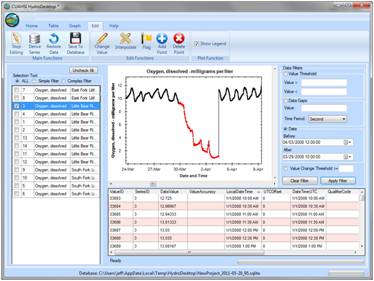
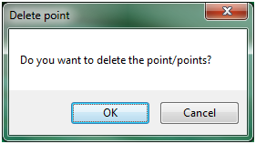
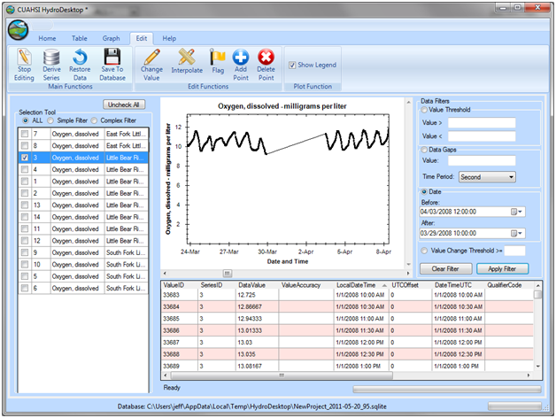

Deleting Data Values
In many cases you will need to delete erroneous data from data series that you are working with. This can be useful for example when you have a sensor data stream within which the sensor has failed and you need to delete the period of data during which the sensor failure occurred. Use the following steps to delete values from a data series:
- If you have not already, select a data series for editing and click the “Start Editing” button on the Edit View ribbon.
- Use the data filters or click on records in the Edit View table to select the data values that you would like to modify. In the following example, all dissolved oxygen data during a period of sensor failure have been selected for deletion using the date filter.

- Click the “Delete Point” button on the Edit View ribbon. The following window will appear. Click the “OK” button to delete the selected data values.

- You will notice that the selected data values have been deleted from the data series.
